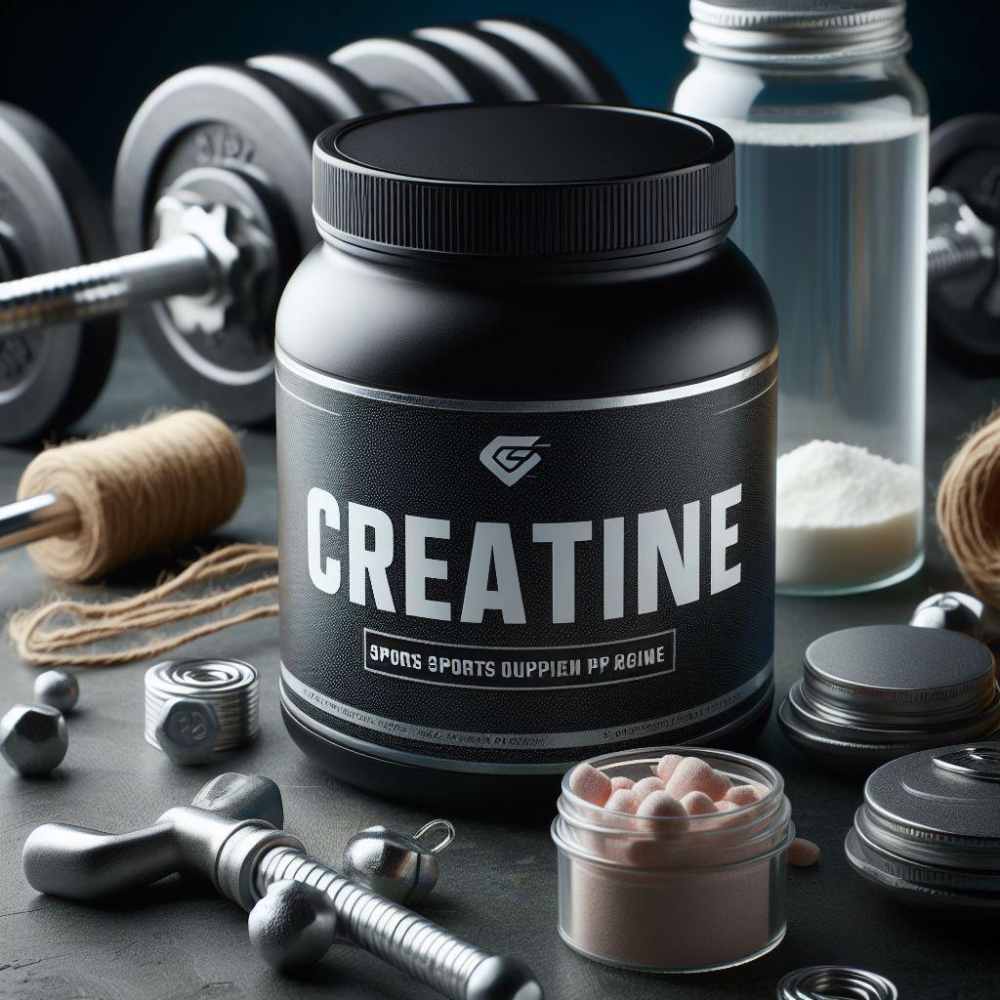

Креатин
Креатин — это азотсодержащая карбоновая кислота, которая встречается в организме позвоночных. Он участвует в энергетическом обмене в мышечных и нервных клетках. Креатин был выделен в 1832 году из скелетных мышц. Вот некоторые важные факты о креатине:
1) Роль в метаболизме:
- Для синтеза креатина необходимы три аминокислоты: глицин, аргинин и метионин, а также три фермента.
- Креатин образуется из креатинфосфата ферментом креатинкиназой.
- Энергетический запас креатина сохраняет уровень АТФ / АДФ на достаточном уровне в клетках, где требуются высокие концентрации АТФ.
2) Применение:
- Креатин часто используется для повышения эффективности физических нагрузок и увеличения мышечной массы у спортсменов и пожилых людей.
- Научные исследования подтверждают его полезность для улучшения спортивной активности молодых и здоровых людей во время кратковременной интенсивной активности, например, в спринте.
3) Формы креатина:
- В чистом виде креатин содержится в мясе животных.
- Креатин-моногидрат — это химическое соединение, представляющее собой молекулу креатина и воды. Его можно купить в виде спортивного питания.
Важно! Если вы планируете включить креатин в свой рацион, обязательно проконсультируйтесь с врачом и тренером, чтобы выбрать подходящий продукт и дозировку. Помните, что индивидуальные потребности могут различаться, и важно следовать рекомендациям специалистов.
Теперь вы знаете больше о креатине! Если вас заинтересовал данный продукт, переходите по кнопке "Просмотр продукции" и подбирайте товар для себя!